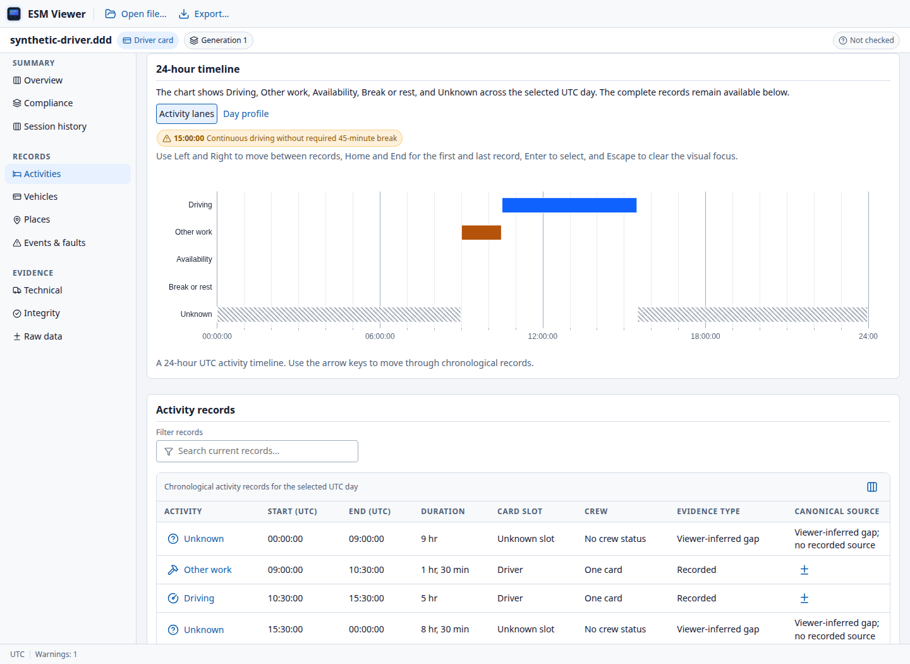
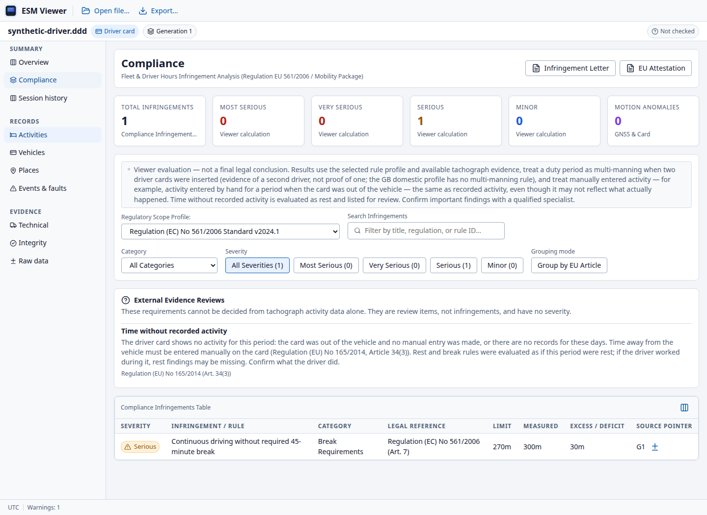
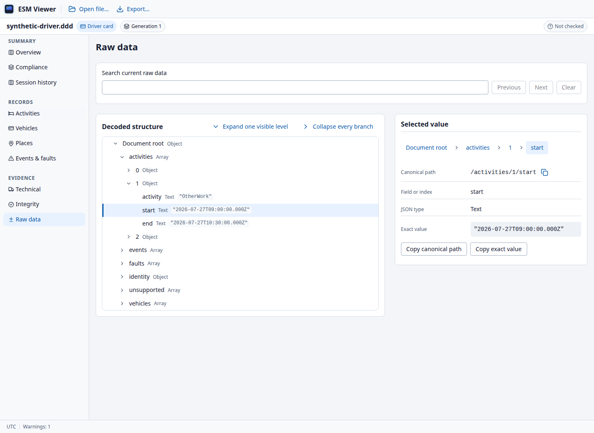

Understand the working day
Explore activity timelines, duty shifts, calendars and presence heatmaps. See driving, work, availability, rest and gaps in context.
Activities · Journeys · UTC day viewsTurn a digital tachograph download into records you can understand. Inspect activities, verify signatures and review driving and rest time—all on your own computer.
Windows · macOS · Linux Free under GPL v3

.DDD.TGD.V1B.C1B.ESM+ more
Follow a recorded day, inspect a technical event or prepare a report. Keep the source behind each value within reach.
Explore activity timelines, duty shifts, calendars and presence heatmaps. See driving, work, availability, rest and gaps in context.
Activities · Journeys · UTC day viewsInspect recorded GNSS positions, borders and loading operations with offline maps. View detailed speed where the download contains it.
Positions · Border crossings · SpeedVerify supported card and vehicle-unit signatures. Full-data, certificate-only and unsupported verification are shown distinctly.
Signatures · Certificates · Clear scopeExamine calculated findings under selectable EU, AETR and GB Domestic profiles, with measured values, references and limitations.
Driving · Breaks · Rest · Working timeInspect events, faults and technical data, compare session downloads, and follow source references into the decoded JSON tree.
Events & faults · Technical data · SourcesExport HTML, JSON and PDF reports. Print reports and prepare infringement acknowledgement letters or activities attestation forms.
PDF · Printing · Document preparationCompliance findings support a review. They are not a certified legal assessment; incomplete records and external-evidence requirements remain explicit.
These are actual Viewer screens using synthetic test records. Select an image to see it at full size. No personal tachograph data is shown.

Inspect measured values, legal references and the evidence still needed. This example is calculated by the app's rule engine.

Follow a source reference into the decoded tree. Inspect the original field value, its UTC timestamp and its canonical path.
Tachograph records contain personal information. ESM Viewer processes them locally, with no telemetry, cloud account or runtime network calls.
No file upload. No cloud processing.
A native desktop application with familiar file controls, keyboard navigation and an in-app guide.
Use File → Open or drop a download into the window. Supported files can be up to 50 MB.
Follow activities, inspect events, check signatures and read the scope of any calculated finding.
Save a report in the format you need. Press F1 whenever you need the built-in User Guide.
Light, dark and system themes · Compact or comfortable density · Seven interface languages
Free, open source and entirely offline. Choose the package for your computer.
Source preview: package links open GitHub Releases. Build the site for direct installer downloads.
x64
Download for WindowsSetup · .exeThe installer is unsigned. If Windows shows a protection warning, verify the download came from this project's release before proceeding. On managed computers, ask your administrator; do not disable Windows protection.
Apple Silicon
Download for macOSDisk image · .dmgThe app is not notarized, so macOS may block its first launch. After verifying the source, review System Settings → Privacy & Security for an app-specific Open Anyway option. If unavailable or restricted by your organisation, ask your administrator. Do not disable Gatekeeper.
x64
Download for LinuxAppImageBuilt on Ubuntu 24.04. Compatibility depends on your distribution and system libraries; AppImage does not support every system. If it will not start, try your distribution's package and check the release notes.
Installers are unsigned; macOS builds are not notarized. Your OS may show a warning. Expand your platform's installation help before proceeding.
Open a download with File → Open or drop it into the window. Press F1 for the in-app User Guide. When
browsing Releases, choose production packages without debug in the filename; source
archives are not installers. If installation fails,
report an installation issue
with your OS version, package filename and error message. Do not attach personal tachograph data.
Need help getting started? Read the installation instructions. The in-app User Guide covers inspection, verification, compliance and privacy.
Ask a question on GitHubDriver-card, workshop-card and vehicle-unit downloads across Gen1, Gen2v1 and Gen2v2. Supported extensions include .DDD, .ESM, .V1B, .C1B, .TGD, .TLG, .V1C and .C1C. The limit is 50 MB per file. Available records and verification scope depend on the file.
The desktop application works offline. It makes no runtime network calls and does not upload your downloads. An internet connection is needed to download an installer or visit the project's GitHub pages.
No. Results are software calculations under the selected rule profile, not a certified legal assessment. Missing records, rule assumptions and requirements needing external evidence must be considered by the reviewer.
A view can only show the records available in a download. Driver cards may contain sparse positions and no detailed speed samples. Missing records are not replaced with a reconstructed route or inferred speed.
The desktop interface supports English, German, French, Italian, Polish, Spanish and Croatian. Themes, density and display time-zone preferences help adapt the interface to your work.
Yes. ESM Viewer is published under GNU GPL version 3 only. You can inspect the source, report issues, contribute improvements or build the desktop application yourself.
Browse the repository →